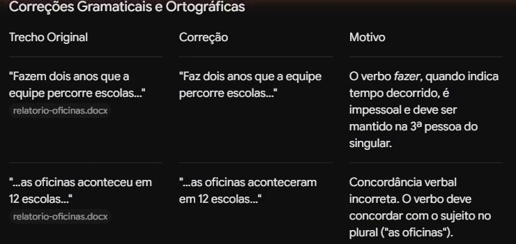
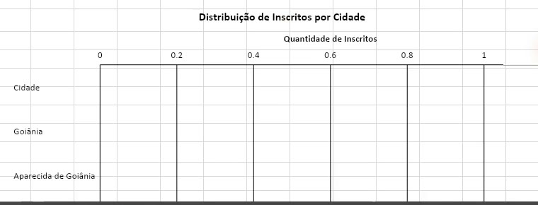

Do chatao agente
IA trabalhando no seu computador
Responda pelo celular
- 1Abra a câmera e aponte para o código
- 2Toque nas respostas: cinco perguntas, sem nome
- 3Seu ponto aparece nesta tela
Precisamos fazer esse curso ser uma experiência.
Victor, ao pedir esta apresentação · 2 nov. 2026
Em 2022, 48 textos por mês da Folha citavam “inteligência artificial”. Em 2026, dez vezes mais.
No Google, a procura por “inteligência artificial” parou de crescer em 2023.
O Brasil não procura “inteligência artificial”. Procura o ChatGPT.
O jornal e o público nem sempre olham para o mesmo lugar.
Os agentes já estão no jornal. Quase ninguém os procura.
Jornal: busca do site da Folha de S.Paulo, sem curadoria · Busca: Google Trends, Brasil · coletados em 2 nov. 2026
Mostrar esse cenário a partir do observatório, utilizando o observatório como um “meta” exemplo.
Victor, nas anotações para o curso · 2 nov. 2026
Uma professora de Física quer que a turma veja, e não só decore, como se calcula o centro de massa.
A gangorra que faz a conta
Arraste os pesos: a gangorra tomba e a fórmula se refaz com os números da tela.
Um professor quer criar uma visualização para explicar para os seus alunos como funciona o cálculo de centro de massa.
Victor, pedindo este exemplo · 2 nov. 2026
- Quem fez
- Claude Code
- O que fez
- Montou a gangorra, o balanço e a fórmula que se refaz a cada movimento
Falta gente para o Uno de domingo. Dá para ter adversários que pensam cada jogada sem nenhuma IA ligada?
Quatro robôs numa mesa de Uno
A partida acontece agora, no navegador: não é um vídeo gravado, e as cartas mudam a cada jogo. Os robôs não são IAs. Cada um tem uma ficha com três regras e confere de cima para baixo; o balão mostra a regra que ele usou.
Fazer algo bem mais impressionante, como se fosse uma mesa e tendo algum tipo de representação para cada bot.
Victor, sobre a versão anterior · 2 nov. 2026
- Quem fez
- Claude Code (mesa e fichas) e Gemini no Antigravity (os robôs)
- O que fez
- Escreveu uma vez a ficha de regras de cada robô e montou a mesa; pediu ao Gemini os retratos. Na partida, nenhuma IA é chamada
Os robôs não foram desenhados por ninguém. Uma IA pediu a outra.
Quatro jeitos de jogar
A atacante, o cuidadoso, a colorida e o guardador: o jeito de cada um está no rosto e na ficha de regras.


Quatro bustos de robôs simpáticos, lado a lado […] cada um com uma personalidade visível no rosto: um confiante, um pensativo, um alegre, um desconfiado.
Claude Code, pedindo ao Gemini (Antigravity) · 2 nov. 2026
- Quem fez
- Gemini, pela ferramenta de imagens do Antigravity
- O que fez
- Desenhou os quatro numa imagem só; o Claude recortou cada um e pôs na mesa
Um laboratório quer acompanhar tudo o que sai sobre IA, em português, sem ter uma equipe de programadores.
Um observatório inteiro sobre IA
Mais de 1.600 materiais, as notícias de IA todo dia e aulas interativas. De onde vieram os dados que vocês acabaram de ver.

[o pedido que deu origem ao portal]
Victor pedido a buscar
- Quem fez
- IAs de código confirmar quais
- O que fez
- Escreveu o código do portal; a equipe do LAPIG escolhe e revisa cada conteúdo
Antes de seguir, uma pergunta: quem fez tudo isso?
Tudo foi feito conversando com uma IA, em português comum.
Inclusive esta apresentação. Hoje vocês aprendem o caminho.
ao agente
 A gangorra
A gangorra A mesa de cartasOs robôsO Observatório
A mesa de cartasOs robôsO ObservatórioUm problema por vez
Resolvido aqui mesmo, sem instalar nada.
A coordenadora de um projeto de extensão precisa mandar amanhã o relatório anual para a Pró-Reitoria de Extensão, e ninguém revisou o texto.
Dez problemas achados
No navegador, o Gemini achou 7 erros de português e 3 informações que não batiam, mostrou as correções numa tabela e gerou o Word com as dúvidas entre colchetes.
Coordeno este projeto e preciso mandar este relatório para a Pró-Reitoria de Extensão amanhã. Revise o texto: corrija os erros de português e me mostre numa tabela o que mudou […]. Depois, aponte qualquer informação que não bate entre uma parte e outra do relatório.2º pedido
Agora me devolva o relatório inteiro já corrigido, num arquivo do Word para eu baixar. Onde houver informação que não bate, deixe destacado entre colchetes para eu conferir antes de enviar.
Digitado no Gemini da conta UFG · 3 nov. 2026
- Quem fez
- Gemini, no navegador
- O que fez
- Achou os 7 erros e as 3 informações que não batem; depois gerou o Word corrigido
O organizador das oficinas recebeu a planilha do formulário com cidades escritas de vários jeitos e gente inscrita duas vezes. Precisa saber quantas pessoas vêm de cada cidade.
A planilha contada e arrumada
Em 159 linhas com 150 pessoas, o Gemini achou as 9 repetições, padronizou as cidades, ensinou a fórmula CONT.SE e gerou o arquivo com aba de resumo.
Quero saber: quantas pessoas se inscreveram de cada cidade, de cada vínculo e em cada oficina? Tem alguém inscrito duas vezes? Faça um gráfico com as cidades. E me ensine a fórmula para eu fazer essa contagem sozinho no Excel da próxima vez.2º pedido
Ótimo. Agora me devolva a planilha arrumada para eu baixar: com as cidades padronizadas, sem as inscrições repetidas e com uma aba de resumo com as contagens de pessoas únicas.
Digitado no Gemini da conta UFG · 3 nov. 2026
- Quem fez
- Gemini, no navegador
- O que fez
- Contou por cidade, vínculo e oficina, achou os 9 repetidos, ensinou o CONT.SE e devolveu a planilha arrumada
A IA no navegador resolve bem, mas precisa de conferência sempre

No relatório, o Gemini achou os 10 problemas, montou a tabela de correções e gerou o Word. Na planilha, achou as 9 inscrições repetidas e ensinou as fórmulas do Excel.

A pergunta era quantas pessoas, mas as tabelas da primeira resposta somaram as inscrições repetidas: 159 em vez de 150. O arquivo do segundo pedido trouxe as contagens certas, mas o gráfico veio vazio.
Cada arquivo vai até o site e cada resultado volta como download. Numa pasta inteira com arquivos em formatos diferentes, isso vira subir, baixar e organizar tudo à mão.
E numa pasta inteira? A IA trabalha onde os arquivos já estão
Na Fase 3, a IA instalada no seu computador lê e cria arquivos na pasta que você abrir, e você acompanha cada passo.
um arquivo de cada vez
- jan.xlsx
- Fevereiro 2026.xlsx
- despesas_mar.xlsx
- abril-final.xlsx
- maio (1).xlsx
- JUN 2026.xlsx
- julho.csv
- ago_despesas_v2.xlsx
- Setembro.xlsx
- out - revisado.xlsx
- nov.xlsx
- dezembro 2026 FINAL.xlsx
Instale o Antigravity em uns 20 minutos
O passo a passo completo, com o que fazer se der errado, está na página Instalar do curso.
- No navegador, abra
antigravity.google/downloade baixe a versão do seu sistema. - Abra o arquivo baixado e instale o programa.
- Entre com a conta pessoal @gmail.com, ou com a da UFG se estiver liberada.
- Abra uma pasta vazia e pergunte: “Quais arquivos existem nesta pasta?”
Um servidor recebeu as despesas do ano em 12 planilhas mensais, cada uma feita por uma pessoa de um jeito. Precisa juntar tudo e ver o total de cada mês.
Doze planilhas: juntar, conferir e corrigir
A IA juntou as planilhas de despesas e gerou o gráfico. A conferência achou acentos quebrados nas abas, no resumo e no gráfico, corrigidos num segundo pedido.
Nesta pasta estão as planilhas de despesas de 2026, uma por mês, cada uma feita de um jeito. Junte tudo numa planilha só […], com uma aba por mês e uma aba Resumo com o total de cada mês e do ano. Faça também um gráfico dos totais por mês […]. Não altere os arquivos originais.
Digitado no Antigravity · 3 nov. 2026
- Quem fez
- Gemini 3.8 Flash, no Antigravity instalado
- O que fez
- Abriu as 12 planilhas da pasta, juntou tudo numa planilha nova e fez o gráfico